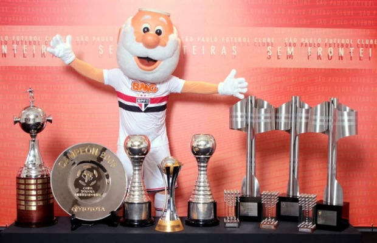

O São Paulo Futebol Clube foi fundado originalmente em 25 de janeiro de 1930, nascido da fusão entre
dois clubes tradicionais da cidade: o Club Athletico Paulistano, referência esportiva da elite
paulistana no início do século XX, e a Associação Atlética das Palmeiras. Ambos decidiram unir forças
para enfrentar o novo cenário do futebol profissional que ganhava espaço no Brasil. A união resultou na
criação de um clube novo, mas com fortes raízes no esporte paulista e nas tradições dos fundadores. O
São Paulo começou suas atividades já com uma estrutura organizada e uniforme em vermelho, branco e preto
— cores que homenageiam os clubes fundadores e o estado de São Paulo.
Time que entrou em campo na primeira partida da história do São Paulo, em 16 de março de
1930
Contudo, por dificuldades financeiras e conflitos internos, o clube teve suas atividades encerradas em
1935. No entanto, a paixão dos torcedores e dirigentes pelo projeto não cessou, e naquele mesmo ano o
São Paulo Futebol Clube foi refundado, mantendo seu nome, escudo, uniforme e filosofia. A refundação
marcou um recomeço promissor, e a partir dali o SPFC iniciou uma trajetória de ascensão, consolidando-se
como uma das maiores instituições esportivas do país.
Morumbi e a consolidação patrimonial
Uma das maiores conquistas institucionais do São Paulo FC não está dentro de campo, mas nas
arquibancadas de concreto do Estádio Cícero Pompeu de Toledo, o Morumbi. Idealizado na década de 1940 e
com sua construção iniciada em 1952, o Morumbi tornou-se símbolo da grandeza do clube e de sua visão a
longo prazo. Erguido com apoio de sócios, torcedores e campanhas públicas de arrecadação, o estádio foi
construído sem a ajuda do poder público — um marco raro no futebol brasileiro. Seu nome homenageia
Cícero Pompeu de Toledo, presidente visionário responsável por sonhar o projeto.
Morumbi na data de sua inauguração; Jogo SPFC 1x0 Sporting-POR
O estádio foi inaugurado parcialmente em 1960 e finalizado em 1970, com capacidade original para mais de
120 mil pessoas. Por décadas, foi o maior estádio particular da América do Sul, sendo palco de decisões
históricas, shows internacionais e eventos cívicos. O Morumbi representa o esforço institucional do SPFC
em se consolidar não só como clube de futebol, mas como um patrimônio da cidade de São Paulo. Hoje, o
estádio continua como centro administrativo, esportivo e cultural do clube, abrigando também o memorial
oficial e salas de troféus.
Morumbi atualmente
Estrutura administrativa e gestão
O São Paulo sempre se destacou por sua independência financeira e modelo administrativo. Por grande
parte de sua história, adotou um modelo associativo tradicional, onde o clube é gerido por um Conselho
Deliberativo e por um presidente eleito democraticamente pelos conselheiros. Durante décadas, o SPFC
manteve uma gestão centrada em dirigentes com forte ligação institucional, como Laudo Natel, Juvenal
Juvêncio e Marcelo Portugal Gouvêa, que marcaram eras de estabilidade e conquistas.
Conselho deliberativo do SPFC
A gestão tricolor se apoiou em planejamento de longo prazo, forte investimento em estrutura e categorias
de base, e prudência nas finanças. A criação do CFA Laudo Natel em Cotia, por exemplo, é um reflexo
claro da visão estratégica do clube. Além disso, o SPFC sempre se posicionou como um clube politicamente
independente e neutro, mantendo-se distante de alianças partidárias e preservando sua autonomia
esportiva e institucional.
Memorial do SPFC
Dentro dessa estrutura, destaca-se o programa "Sócio-Torcedor". Lançado
como parte da modernização institucional e da aproximação com a torcida, o programa oferece benefícios
como ingressos com desconto, experiências exclusivas e prioridade na compra de entradas. O
"Sócio-Torcedor" se tornou uma importante fonte de receita e um elo entre clube e torcedor, promovendo
engajamento e fidelização da torcida são-paulina. Vale ressaltar que o Tricolor Paulista foi pioneiro na
estruturação do programa de sócio-torcedor no Brasil.
O papel no futebol brasileiro e internacional
O São Paulo FC é reconhecido não apenas por suas conquistas, mas por seu papel estruturante no futebol
brasileiro. Desde os anos 1940, o clube assumiu protagonismo em propostas de organização das federações,
profissionalização dos atletas, melhorias na arbitragem e no calendário do futebol nacional. Foi um dos
primeiros clubes a investir fortemente em intercâmbios internacionais, levando delegações para Europa e
América Latina já nas décadas de 1950 e 60.

Taças do SPFC
Internacionalmente, o São Paulo foi o clube que abriu o caminho para o respeito global aos clubes
sul-americanos com as conquistas da Libertadores e do Mundial Interclubes em 1992 e 1993. A repetição do
feito em 2005 consolidou sua imagem como referência de gestão e competitividade. O Tricolor também se
tornou modelo de formação de atletas e de exportação de talentos para o futebol europeu, com nomes como
Kaká, Casemiro, Militão e Antony ganhando o mundo após formação em Cotia.
Categorias de base
Uma das marcas mais fortes da instituição São Paulo FC é sua excelência na formação de atletas. O Centro
de Formação de Atletas Laudo Natel, em Cotia, é um dos maiores e mais modernos da América Latina.
Inaugurado em 2005, o CFA abriga jovens talentos de diversas categorias, com estrutura que inclui
alojamentos, refeitório, campos oficiais, academia e escola. O projeto foi idealizado para garantir que
os jovens cresçam em um ambiente saudável, focado não apenas na prática esportiva, mas também na
educação e formação humana.
Complexo do CFA de Cotia
Ao longo dos anos, Cotia revelou dezenas de jogadores que se tornaram referências mundiais, entre eles
Kaká (Bola de Ouro 2007), Casemiro (Real Madrid), Lucas Moura, Brenner, David Neres, Éder Militão e
Antony. A produção contínua de talentos reforça o papel do São Paulo como formador e como uma
instituição que pensa no futuro do esporte.
Complexo do CFA de Cotia
Legado esportivo
O São Paulo FC é dono de um dos maiores currículos de títulos do país. No futebol nacional, é tricampeão
consecutivo do Brasileirão (2006–2007–2008), detentor de seis títulos brasileiros, campeão da Copa do
Brasil (2023), e detentor de 22 títulos paulistas. No cenário internacional, é tricampeão da
Libertadores da América (1992, 1993, 2005) e tricampeão mundial (1992, 1993, 2005), além de títulos como
a Copa Sul-Americana (2012) e a Recopa Sul-Americana (1993, 1994).
Principais taças do SPFC
Mais que números, os títulos do São Paulo representam um legado de excelência, profissionalismo e
respeito às tradições do clube. Ao longo das décadas, o Tricolor Paulista sempre se posicionou como uma
força esportiva admirada dentro e fora do Brasil, sendo frequentemente citado como um dos clubes mais
organizados do continente.